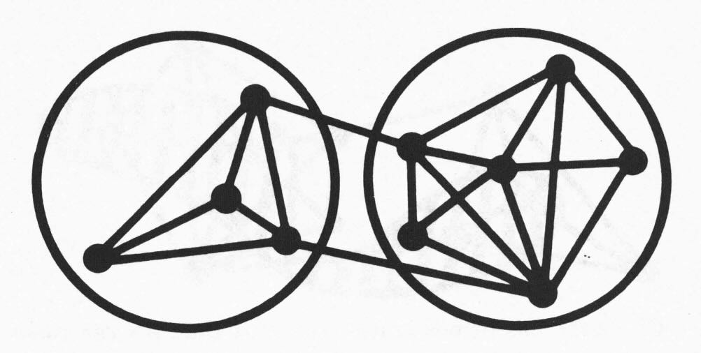

Christopher Alexander and Network Theory
In his early work, “Notes on the Synthesis of Form (1964)” (abbreviated in the following as NotSoF), Christopher Alexander explored a mathematical, network-based approach to design. He conceptualised design as an interrelated network of “misfit variables” to be optimised through computational analysis, algorithmically solving conflicts between interconnected elements.
His thesis was that to solve a design problem it should be reduced to multiple smaller problems and that, crucially, we have been limited to using existing concepts that have come down to us as “arbitrary historical accidents” rather than being an optimal description of the situation at hand. At this stage, Alexander’s approach was reductionist and analytical, believing that a design could be synthesised and studied through rigorous structural optimization. He suggested algorithms (precursors to community structure algorithms) to cluster elements together in such a way as to reduce the overall design problem to a hierarchical tree of simpler ones which in turn could be solved and optimised independently.

In this work, the clusters of variables Alexander calls “diagrams” (which he would later rename to the “patterns” which he became famous for) and this is where his thinking began to change. As he states in the preface to later editions:
As you can see, it is the independence of the diagrams which gives them these powers. At the time I wrote this book, I was very much concerned with the formal definition of “independence,” and the idea of using a mathematical method to discover systems of forces and diagrams which are independent. But once the book was written, I discovered that it is quite unnecessary to use such a complicated and formal way of getting at the independent diagrams.
What does modern network science tell us about this? To answer this we can use the example described in depth at the end of NotSoF.
This is the full and extensive design problem that Alexander studied. Although he was able to group this into 12 hierarchical clusters (represented by the colours off the nodes), the nature of the independence of those clusters is far from clear. Force directed layouts such as this one sometimes identify underlying structure but not in this case. Even so, visually it might be deceiving so we can apply modern summary statistics to this network and see the difficulty in clustering this network at all.
| Metric | Value | Interpretation |
|---|---|---|
| Average degree | ~20 | Each node, on average, interacts with 20 other nodes. |
| Edge density | 0.14 | About 1 in 7 of all possible interactions are present. This is a dense graph. |
| Average Path Length | 2.0 | On average there are just 2 hops between each node. |
| Global clustering coefficient | 0.06 | Higher values mean better clusters. This is a very low value. |
| Algebraic connectivity | >6 | Very high. By comparison tree-like graphs, scale-free and small-world networks have this typically less then 1.0. |
These metrics all point at this being a highly connected network without any clear clusters or community structure. Although the diagrams suggested by Alexander in the book do, to some measure, minimise the links between clusters, the result is still very far from the tree-like structure that is espoused.
Alexander realised this, of course, and the beginnings of a perspective shift are clear in his essay the very next year “A City is Not a Tree (1965)”, where he claimed that cities and urban structures cannot be fully explained by hierarchical models or purely tree-like networks. He argued that successful cities are not trees but are “semi-lattices” — networks with overlapping connections that resemble the organic, intertwined complexity of real-life. Here, Alexander is reflecting on and challenging his own reductionist assumptions, positing that cities function best with fluid, overlapping, and non-hierarchical connections, allowing diverse elements to interrelate dynamically.
Alexander’s reflexivity is to be admired. Remember he was writing this 60 years ago, when hard science was a raging success explaining the unexplainable and we were still optimistic for “Grand Theories of Everything” even though computers filled an entire room.
By the time Alexander finished “A Pattern Language (1977)”, his thinking had moved even further away from strict optimization schemes toward a more life-centered philosophy. He recognized that human environments thrive on the richness of overlapping networks rather than static or strictly hierarchical arrangements. Rather than optimizing individual design problems, he focused on identifying “patterns” — recurring, archetypal solutions that reflect timeless principles of habitability. Each pattern addressed a design aspect that could contribute to a “whole” design when combined with others in rich and intricate ways. Patterns were interconnected in what Alexander saw as a more organic network, linked by relationships that encouraged cohesion and harmony within the design. Rather than algorithmic clustering, these patterns represented design wisdom drawn from observation and experience, creating environments that intuitively supported human needs and preferences.
Taking this idea further, in “The Nature of Order series (2002–2005)”, Alexander considers “centers,” a concept intended to capture essential order that appears naturally within vibrant environments. Alexander believed these centers were interrelated and overlapping, embedded in a “living” structure that achieved harmony through wholeness rather than quantifiable connections.
By this point Alexander’s perspective has shifted entirely to a holistic one. He is no longer using tree structures and prefers using words like "wholeness" to describe this shift requiring experience and expertise to understand the full picture.
I will admit that the mathematical approach of Alexander’s early work still very much appeals to the logical side of my brain and 30+ years of western education: if I follow this procedure, I can solve the problem in the abstract using maths and computers. This is one extreme of a philosophical framework which emphasises narrowing the vision and focusing in on breaking down and solving component problems and then reintegrating them. Some people use the left-hemisphere as a metaphor for this kind of thinking.
This is also the thinking that leads us to search for optimal efficiency through gradient descent to cost reduction and maximal productivity.
However, shifting too dramatically from a left-hemisphere to right-hemisphere approach (System A to System B, as he called them) causes unresolvable tension, poles so far apart that there simply is no sweet spot. Christopher Alexander himself documented these problems in the book “The Battle for the Life and Beauty of the Earth: A Struggle between Two World-Systems (2012)”. System A drives for cold, modern efficiency and System B for life and harmony. I live in a System A building. How much better it could have been with a little System B. Too much System B and it wouldn’t even exist. As Daniel Schmachtenberger says “we’re creating a future that nobody wants”.
Can we apply modern efficiency to find life and harmony and get the best of both worlds? It doesn’t seem like an impossible goal to me.
In modern network theory, patterns, diagrams and even centres might be better considered as motifs rather than clusters determined by the density of their interactions. Motifs are repeating, stable structures with the potential to identify key functional properties embedded within a network of a particular type - certain configurations that always seem to work well together. Importantly, they do not need to be disconnected from the rest of the network but can mix and overlap with other nodes and motifs while maintaining their own essential structure. Although there are modern algorithms for detecting motifs, just like clusters, at this point Alexander was arguing that algorithms could not capture the fundamental quality of “life” that great designs embody; only an intuitive, holistic understanding could bring the sense of harmony aspired to.
There is a certain circularity in Alexander’s story. With the aim of trying to get away from subjective, accidental concepts to a more objective approach he ended up saying that only through expertise are we able to detect and evaluate the concepts in the first place.
I am more optimistic. I wonder if we will be able to complete the circle and detect natural but explainable motifs. For example, new language models seem to be able to glean underlying patterns that maybe even the experts are not aware of. I can envision a world, not too far away, where we will need both the algorithmic tools and expert evaluation to keep things in check.
A nice example of a similar circularity has happened in chess. Many believed that computers could not play chess due to the unfathomable number of possible moves while others believed that even if they did, the game would become boring and predictable. Nonetheless modern engines have far surpassed humans and are now helping professional players to develop new intuitions. Rather than mechanising the game, modern encounters are quick to leave theory behind and explore more novel openings than they did before the engines existed.
The evolution of Christopher Alexander’s design philosophy also has an interesting analogy with the modern tension between systems thinking and complexity theory. When viewed through the lens of network theory we can place his journey in a firm conceptual framework and show his battles in a modern light. He moved from clustering design variables to a more holistic, fluid approach. This is very similar to the comparison by some of traditional and structural systems thinking approaches (such as lines and circles and systems dynamics) to more fluid approaches from Complexity Theory. Bearing in mind Alexander’s philosophical journey, I am eager to see the evolution and synthesis of both of these subjects.